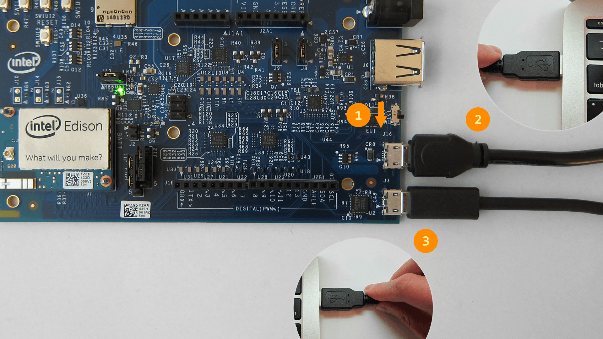

Step 2: Set up your Intel Edison
Instructions for the Intel® Edison Kit for Arduinowith Arduino-compatible expansion board.
-
Connect your Intel Edison to your computer as described below.

(1) microswitch in "USB device mode" (i.e. toggled down towards the micro-USB ports)
(2) device mode micro-USB cable plugged into your computer
(3) UART/serial micro-USB cable plugged into your computer
The Arduino expansion board for Intel® Edison can be powered via the DC power jack, the device mode micro-USB port, or both. This setup uses only a micro-USB cable for power.
-
Wait one minute for the Intel® Edison to finish booting up.
How do you know when the board is ready?
You will know that the Intel® Edison is fully initialized when your computer mounts a new drive (much like inserting a SD card into your computer).
The Intel® Edison should now have a green light lit indicating that it has been powered on and you should see a new "Edison" drive mounted.